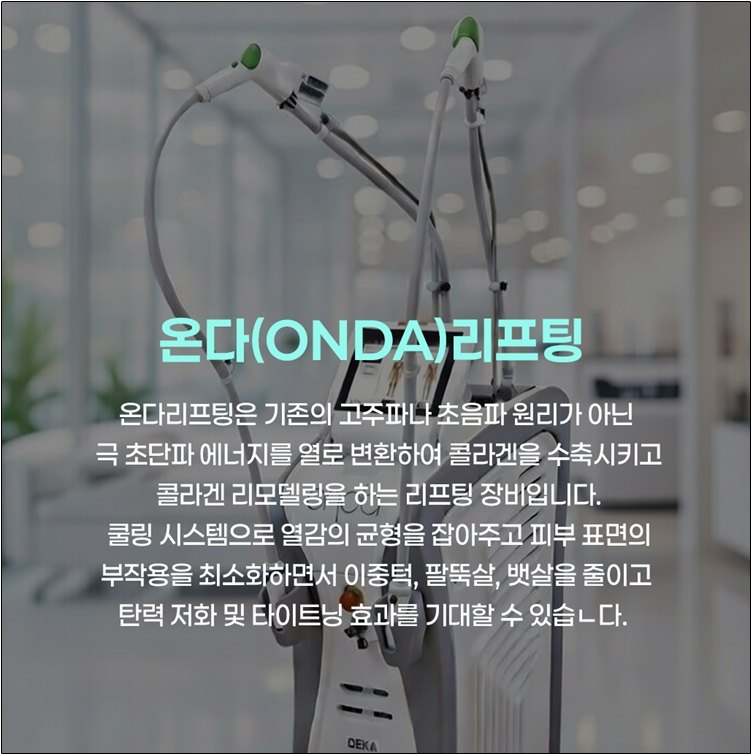
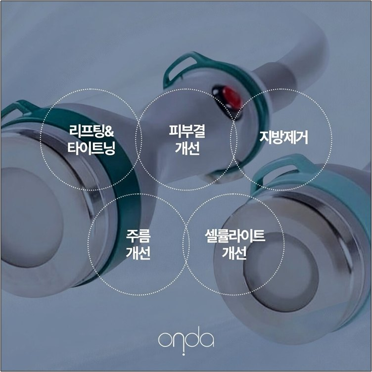
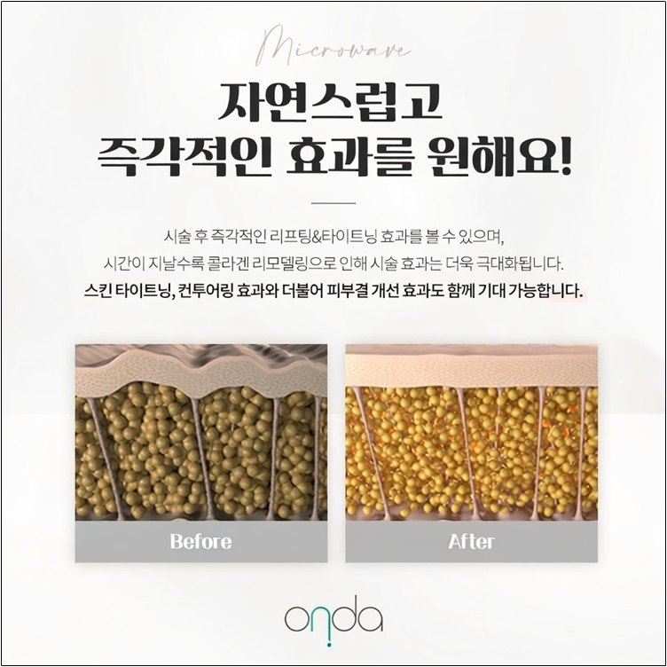
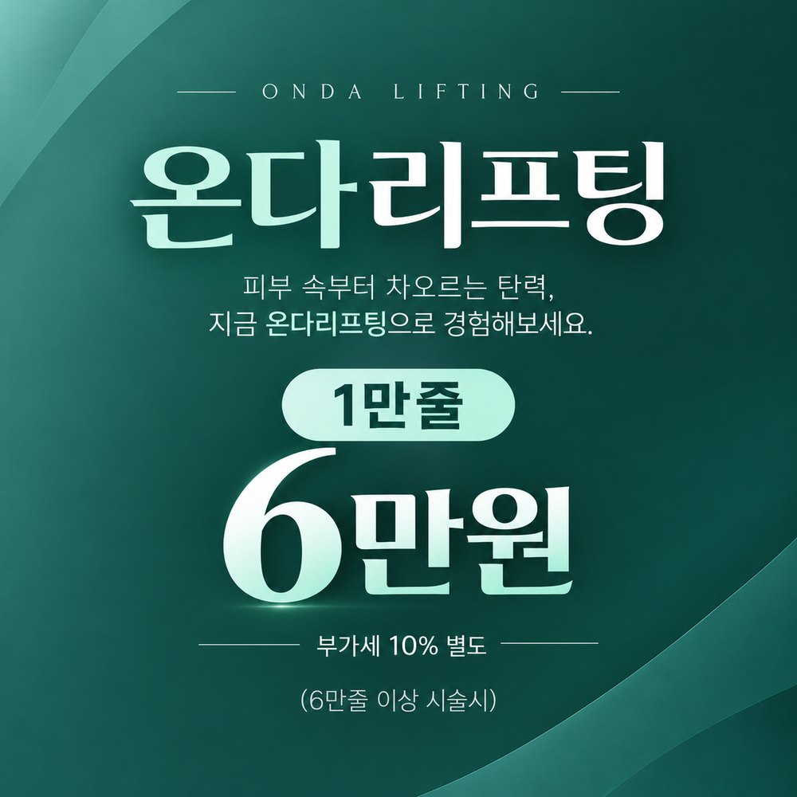
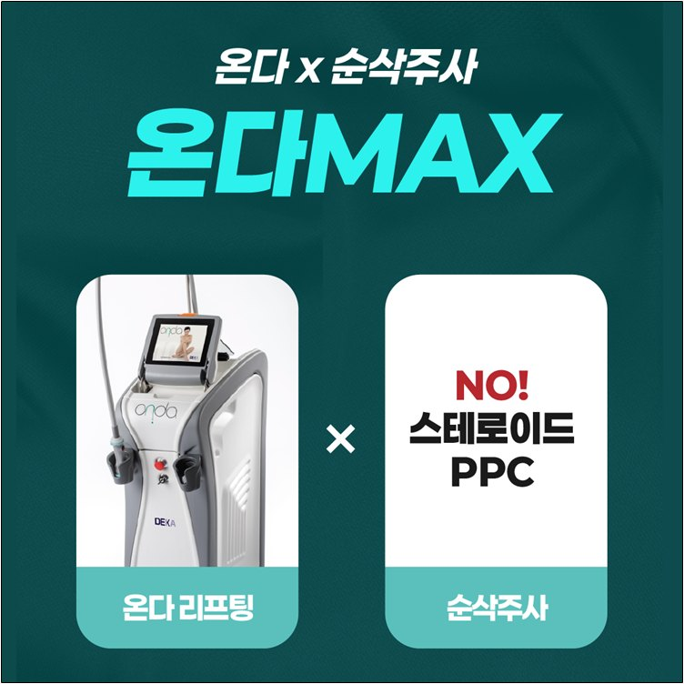
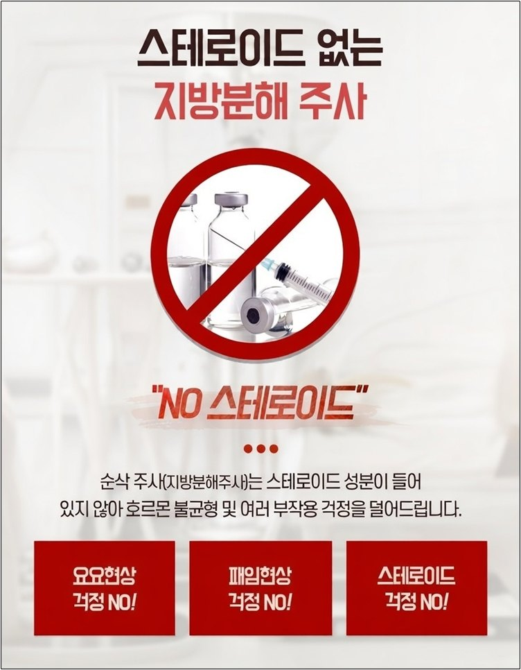
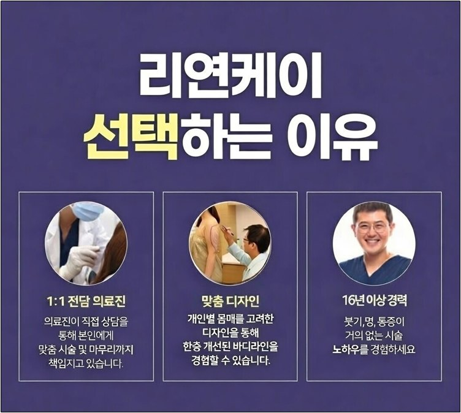

운동을 해도 팔뚝은 왜 그대로일까요?
소매가 짧아지는 계절이 다가오면 팔뚝 상담이 늘어납니다. 팔뚝은 지방이 얇게 퍼져 있어서, 체중을 줄여도 처진 느낌이 그대로 남기 쉬운 부위입니다. 살이 많아서가 아니라 탄력이 아쉬워서 고민하는 분이 생각보다 많습니다.

온다리프팅은 극초단파(마이크로웨이브) 에너지를 피부 깊은 층까지 전달하는 시술입니다. 불필요한 지방세포를 정리하면서 리프팅과 탄력 개선을 함께 기대합니다.
한 번에 확 줄이는 방식이 아니라 점진적으로 변하기 때문에, 자연스러운 라인을 원하는 분들이 많이 찾습니다.


시술 중에는 참을 만한 정도의 뜨거움이 느껴집니다. 멍이나 붓기 부담이 적은 편이라 대부분 바로 일상생활이 가능합니다.
다만 시술 직후 2~3시간 정도 붉은기가 있을 수 있고, 개인차가 있습니다.
지방량과 탄력도에 따라 다르지만, 팔뚝은 10만줄(100kj) 이상을 권해 드립니다. 팔뚝은 면적에 비해 처짐과 지방이 함께 고민인 경우가 많아, 에너지가 충분히 전달되어야 만족스러운 변화를 기대할 수 있기 때문입니다.
마른 분이나 지방흡입 후 살이 처진 분도 탄력 개선 목적으로 온다리프팅을 받으십니다. 이 경우에는 줄 수보다 피부 상태를 먼저 보고 정합니다. 최종 줄 수는 상담에서 결정됩니다.
지속 기간은 3~4개월 정도로 안내합니다. 3회 시술 후 매년 이어서 받으면 유지와 개선에 도움이 됩니다.
팔뚝 온다 10만줄(100kj) 정상가는 80만 원부터입니다.
이벤트 가격과 기간은 변동될 수 있으니 방문 전 전화나 카카오톡으로 확인해 주세요.

온다리프팅에 지방분해주사(순삭주사)를 더한 복합 시술입니다. 온다가 지방 감소와 탄력 개선을 맡고, 순삭주사가 한 번 더 지방 감소를 도와 갸름하고 탄력 있는 팔뚝 라인을 목표로 합니다.
리연케이의 순삭주사는 스테로이드와 PPC를 사용하지 않고, 약물을 고농도로 혼합해 적은 용량으로 진행합니다.


지방흡입도 마찬가지인데, 지방세포를 무작정 많이 줄이면 나중에 나이가 들거나 살이 쪘을 때 처짐이나 울퉁불퉁함, 움푹 패임이 생길 수 있습니다.
그래서 어깨에서 팔뚝까지 매끈하게 이어지는 라인을 만드는 것이 먼저입니다. 리연케이는 16년 이상 지방성형 경험을 가진 의료진이 직접 상담하고, 지방량과 라인을 보고 디자인한 뒤 진행합니다. 같은 온다리프팅이라도 누가 시술하느냐에 따라 결과가 달라집니다.

참을 만한 뜨거움이 느껴지는 정도로 안내하며, 통증 민감도는 개인차가 있습니다.
대부분 가능하지만, 직후 2~3시간 정도 붉은기가 있을 수 있습니다.
지속 기간은 3~4개월이며, 3회 시술 후 매년 이어서 받으면 유지와 개선에 도움이 됩니다.
정상가는 80만 원부터이고, 11월 30일까지 이벤트로 60만 원(부가세 10% 별도)에 진행합니다.
내 팔뚝에는 몇 줄이 맞는지 궁금하시다면.
팔뚝온다 상담을 편하게 문의해 주세요. 리연케이의원에서 1:1 상담으로 내 라인에 맞는 방법을 안내해 드립니다.
※ 본 글은 일반적인 정보 제공을 위한 것이며, 시술 효과와 부작용은 개인에 따라 다를 수 있습니다. 정확한 진단과 시술 여부는 의료진 상담 후 결정됩니다.